This project is meant to be an example of how to organize a data analytics case study/project. It is not meant to provide insights for stock data or stock trading. It also does not build on any finance literature (e.g. regarding risk factors such as size, growth, or momentum).
S&P500 Daily stock Returns
T. Evgeniou, N. Nassuphis, D. Spinellis
INSEAD, Satrapade, AUEB
Disclaimer
Project Description
A simple analysis of daily stock returns of S&P 500 stocks.
The Data
Ten years (from 2003-01-03 to 2013-04-12) of daily returns of 423 companies which were in the S&P500 index in February 2013. Every row is a day and every column is an individual stock. The data matrix has 2586 rows and 423 columns.
Histogram of Daily Returns
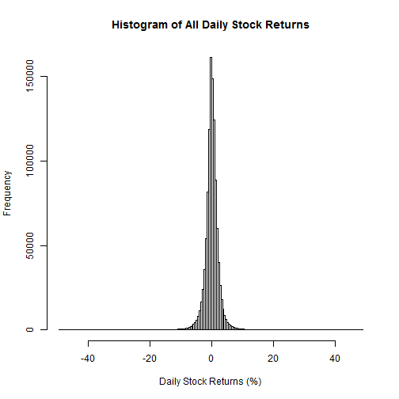
How Cumulative Returns are Calculated
All returns reported correspond to the total sum of returns if we invest every day 1 dollar. For example, in this case the market returns is 110.8691, which means that we would have made a total of 110.8691% of 1 dollar, namely 1.1087 dollars. If the return was, say, -200%, we would have lost 2 dollars.
Cumulative Returns of the Equally-Weighted Market
Summary Statistics of Equal Weighted Market
| V1 | V2 | V3 | V4 | V5 | V6 |
|---|---|---|---|---|---|
| Min. :-10.543 | 1st Qu.: -0.514 | Median : 0.099 | Mean : 0.043 | 3rd Qu.: 0.673 | Max. : 10.948 |
Best Stock (in terms of returns) with Hindsight
Stock: MNST
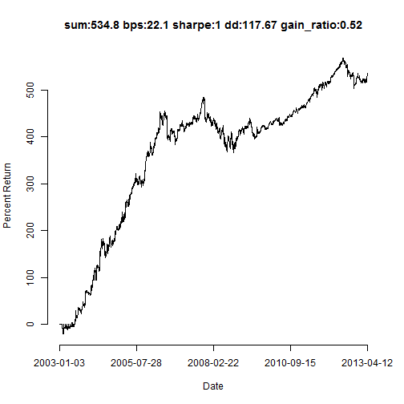
Worst Stock with Hindsight
Stock: C
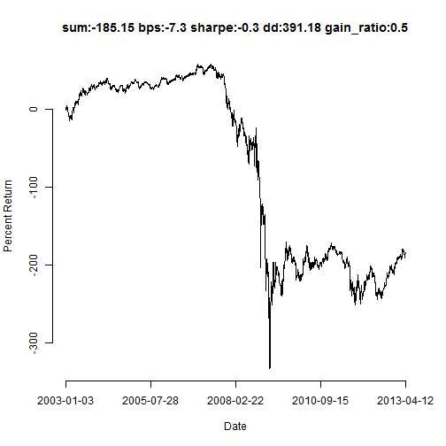
Mean Reversion of the Market
mr_strategy = -sign(shift(market, 1)) * market
names(mr_strategy) <- names(market)
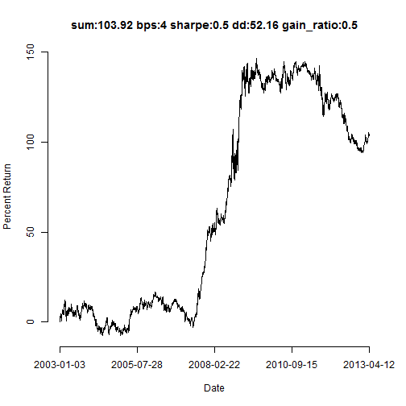
Mean Reversion of the Market: only when the market fell the day before
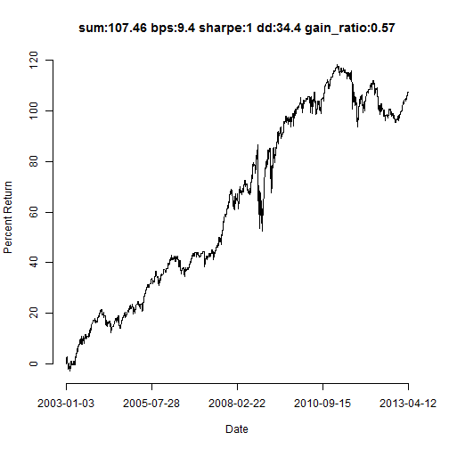
Mean Reversion of the Market: only when the market rose the day before
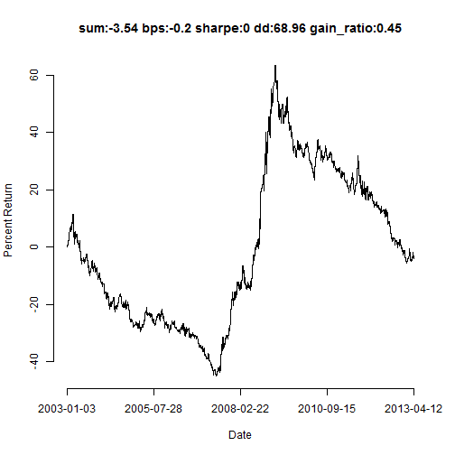
Most Mean Reverting Stock with Hindsight
Stock: HBAN
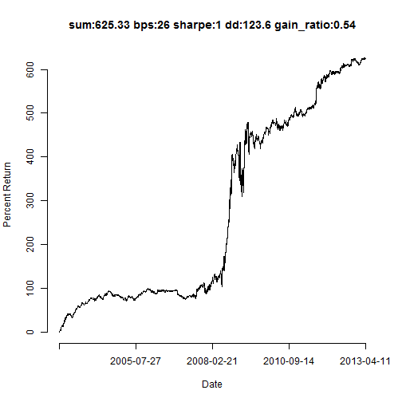
Most Momentum Stock with Hindsight
Stock: MU
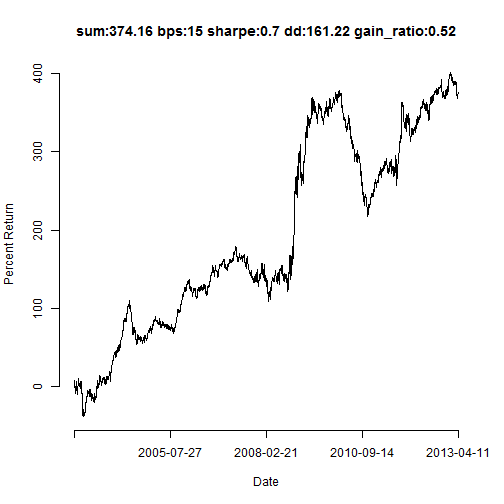
Average of Mean Reversion of All Stocks
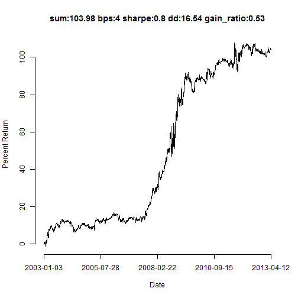
Average of Selecting between Mean Reversion and Momentum for each Stock
What if we select (with hindsight) whether to follow a mean reverting or momentum strategy for each individual stock - e.g. choosing the one of the two that leads to the best cumulative returns over the entire 10 years period?
Note: this requires exactly 1 bit of information for each stock, namely only 423 bits of information with hindsight for the entire 10 years of 423 stocks, namely of 1093878 real numbers.
Average of Selecting between Mean Reversion and Momentum for each Stock
The code:
selected_strat = apply(mr_ProjectData, 2, function(r) if (sum(r) < 0) -r else r)
selected_mr_market = apply(selected_strat, 1, mean)
names(selected_mr_market) <- names(market)
Average of Selecting between Mean Reversion and Momentum for each Stock
Averaging with Hindsight per Time Window
One can repeat the same every day, or every time period of some length - fixing the momentum or mean selection choice for each stock for the entire period
Averaging with Hindsight: Past 750 days
Repeating the same but making the selection only using the performance of the past 750 days
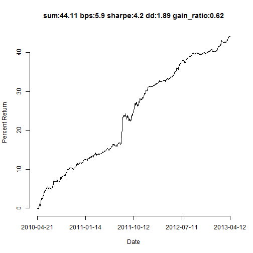
Analysis with Hindsight
Note: For computational reasons and simplicity, all the analysis in this note is performed with hindsight. One could perform the exact same analysis using a rolling window (e.g. of 250 or 60 days for example), doing every day the same analysis using the data in the corresponding window and deciding the stocks to trade the next day.
Principal Component Analysis of Daily S&P 500 Stock Returns: Variance Explained
| eigenvalue | percentage of variance | cumulative percentage of variance | |
|---|---|---|---|
| comp 1 | 175.220 | 41.423 | 41.423 |
| comp 2 | 14.593 | 3.450 | 44.873 |
| comp 3 | 11.487 | 2.716 | 47.589 |
| comp 4 | 8.789 | 2.078 | 49.666 |
| comp 5 | 4.944 | 1.169 | 50.835 |
Principal Component Analysis of Daily S&P 500 Stock Returns: The Scree Plot
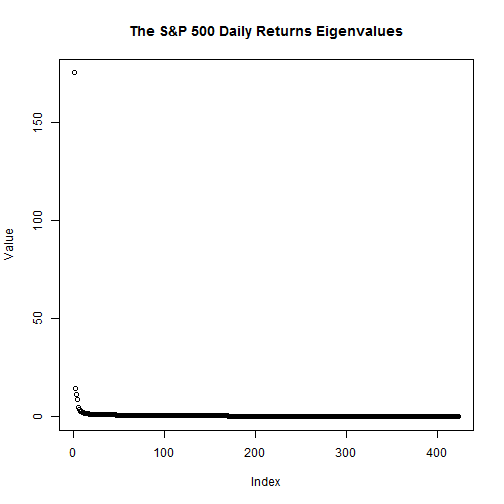
Returns of First Principal Component
Correlation with the market: 0.9998
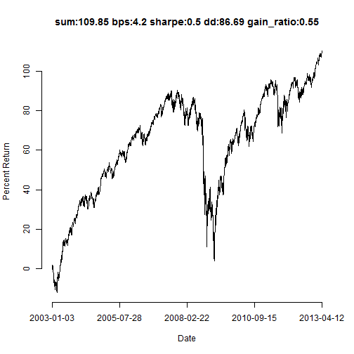
Portfolio weights of First Principal Component
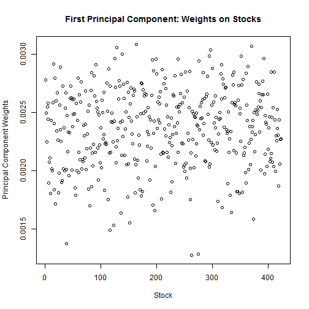
Returns of Second Principal Component
Correlation with the market: 0.0211
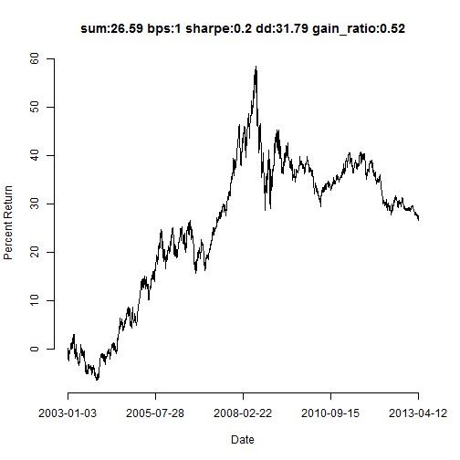
Portfolio weights of Second Principal Component
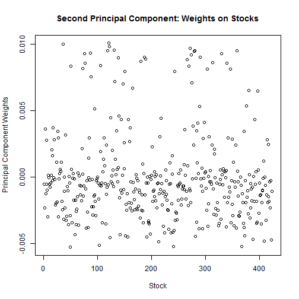
Top Long and Short Stocks in Second Principal Component
Top 10 stocks with the largest positive weight: DVN, APA, DO, NOV, EOG, DNR, SWN, NBL, NE, CHK
Top 10 stocks with the largest negative weights: BBT, STI, MTB, CMA, JPM, WFC, ZION, USB, DLTR, FHN.
Residual Portfolios
Esimate "risk factors"
Regress daily returns of a stock on these factors using least squares regression (or any other regression method)
Estimate the residuals
Trade the portfolios generating these residuals (with weights scaled to invest the desired amount)
Residual Portfolios: Example
We use the first 3 Principal Components of our data as "risk factors"
We assume 0 mean and 0 alpha/regression constant
Scale the regression weights ("betas") to have norm 1.
Residual Portfolios: Example Code
TheFactors = SP500PCA_simple$vectors[, 1:numb_components_used]
TheFactors = apply(TheFactors, 2, norm1)
TheFactors = apply(TheFactors, 2, function(r) if (sum(ProjectData %*% r) < 0) -r else r)
Factor_series = ProjectData %*% TheFactors
demean_IVs = apply(Factor_series, 2, function(r) r - use_mean_alpha * mean(r))
ProjectData_demean = apply(ProjectData, 2, function(r) r - use_mean_alpha *
mean(r))
stock_betas = (solve(t(demean_IVs) %*% demean_IVs) %*% t(demean_IVs)) %*% (ProjectData_demean)
stock_alphas = use_mean_alpha * matrix(apply(ProjectData_demean, 2, mean) -
t(stock_betas) %*% matrix(apply(Factor_series, 2, mean), ncol = 1), nrow = 1)
stock_alphas_matrix = rep(1, nrow(ProjectData)) %*% stock_alphas
stock_betas = t(apply(stock_betas, 1, norm1)) # invest 1 dollar total on the risk portfolio
# use 0.5 scale to invest 0.5 dollars on the stock and 0.5 on the risk
# factor portfolio
Stock_Residuals = 0.5 * (ProjectData - (Factor_series %*% stock_betas + stock_alphas_matrix))
Trading Long-Short Stocks-Risk Porftolios
Note that "trading the residuals" implies that every day we trade the portfolios corresponding to the residuals (with portfolio weights given by the estimated "betas", scaled to invest 1 dollar every day).
Best Residual Portfolio (with hindsight)
Stock: MNST

Most Mean Reverting Residuals Portfolio
Stock: HBAN
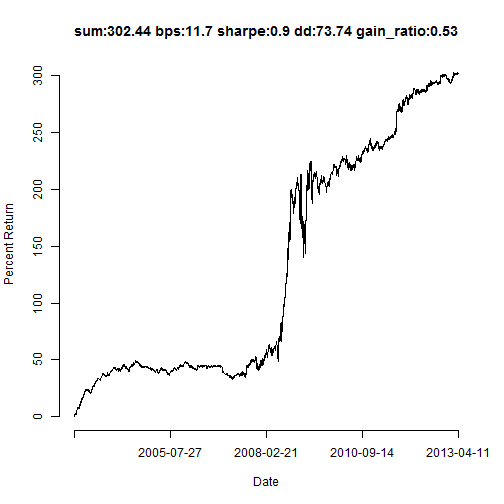
Average of Selection with Hindsight
We can repeat the analysis above using the residuals portfolios.
We select with hindsight whether to use mean reversion or momentum for each residual portfolio for the entire 10 years period (hence 1 bit of information with hindsight per stock) and then average.
Average of Selection with Hindsight
The Code:
selected_strat_res = apply(mr_Stock_Residuals, 2, function(r) if (sum(r) < 0) -r else r)
selected_mr_market_res = apply(selected_strat_res, 1, mean)
names(selected_mr_market_res) <- names(market)
Average of Selection with Hindsight
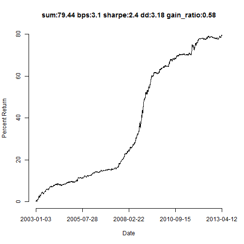
How Many Bits of Information are there in the S&P500 Data?
The results "with hindsight" may give the impression that, even though one cannot reach those results in practice, there is a lot of potential. Afterall one only has to select 423 binary variables for the entire 10 years of data: whether to follow a mean reversion or a momentum strategy for each individual stock or residual portfolio for the entire 10 years period. At first glance, making only a "423 bits" decision (you can think of it as if you "only see 423 bits of information for the entire 10 years for all 423 stocks, namely for 1093878 real numbers!") does not seem much at all - especially if this data is "close to random" (note: known risk factors, such as the momentum one, indicate this is not the case - depending on how one models the series). But maybe this is indeed as many bits of information as one could possibly need to "know all about the S&P 500 stocks for 10 years"...
As always, one has to be very aware of the signal to noise ratio in the data one explores. This is what "fooled by randomness" can really mean.
What if we know with hindsight other 423 bits?
Instead of selecting between mean reversion and momentum for each of the 423 stocks or residual portfolios, we could select with hindsight whether to buy (long) or sell (short) each of the 423 stocks. Are these 423 bits as informative?
Here is the code for seeing the returns of such a portfolio. Try it by uncommenting the plot line.
hindsight_long_short = apply(ProjectData, 2, function(r) if (sum(r) < 0) -r else r)
hindsight_long_short_market = apply(hindsight_long_short, 1, mean)
names(hindsight_long_short_market) <- names(market)
# pnl_plot(hindsight_long_short_market)
Not all "binary choices" have the same information...
Lessons Learned
Basic analysis of daily stock returns.
There appear do be market regimes.
The "equally weighted market" is the first Principal Component of the daily returns data.
Example of statistical estimation of, what one could call, "risk factors".
Example mean reverting or momentum daily trading strategies.
It only take a few bits of information with hindsight to get fooled by randomness with this data.